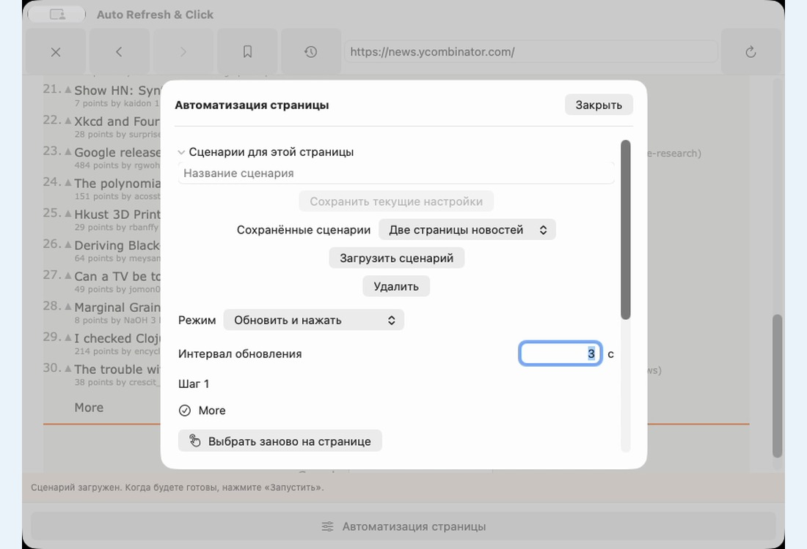

iPhone / iPad
Нужна iOS или iPadOS 15.4 либо новее. Откройте «Настройки» → «Приложения» → Safari → «Расширения». На старых системах откройте «Настройки» → Safari → «Расширения». Включите Auto Refresh & Clicker и разрешите доступ к нужным сайтам.
Auto Refresh & Clicker
Откройте страницу, которой часто пользуетесь, например список заказов с фильтром. Нажмите «Открыть сайт в приложении» на главном экране или откройте расширение на нужной странице Safari.

Выберите значок кнопки прямо на странице или введите её имя. Обозначьте меняющуюся часть имени звёздочкой (*). Если подходят несколько кнопок, уточните шаблон. *_AVS_*
Нужна iOS или iPadOS 15.4 либо новее. Откройте «Настройки» → «Приложения» → Safari → «Расширения». На старых системах откройте «Настройки» → Safari → «Расширения». Включите Auto Refresh & Clicker и разрешите доступ к нужным сайтам.
Нужны macOS 12 и Safari 15.4 или новее. Откройте установленное приложение, нажмите «Открыть настройки Safari» и включите Auto Refresh & Clicker в разделе «Расширения». Затем откройте страницу и нажмите значок расширения в Safari.
Установите расширение из Chrome Web Store. Откройте меню расширений Chrome, при желании закрепите значок и откройте расширение на нужной странице.
Для панели или страницы статуса, которую нужно перезагружать целиком. Начните с интервала в 10 секунд.
Этот режим удобен, когда перед нажатием кнопки или переходом по ссылкам нужно перезагрузить страницу.
Для списка со своей кнопкой обновления, если перезагрузка всей страницы сбрасывает фильтры.
Откройте установленное приложение хотя бы раз, затем проверьте «Настройки Safari» → «Расширения». Нужны macOS 12 и Safari 15.4 или новее. Если проблема осталась, сообщите версии и источник установки.
Откройте обычный сайт по HTTP или HTTPS и разрешите доступ к нему в настройках Safari. На страницах настроек браузера, новых вкладках и некоторых защищённых страницах задачи недоступны. Проверьте сообщение в расширении.
Убедитесь, что кнопка видна и активна. Укажите нужную кнопку на странице или уточните имя или шаблон, чтобы осталось одно совпадение.
Укажите целое число секунд больше нуля и заполните все шаги. Если меняете запущенную задачу, нажмите «Применить изменения».
Держите Safari открытым на экране, а устройство разблокированным. iOS и iPadOS могут приостановить работу браузера в фоне или при блокировке.
Укажите устройство, версии системы, браузера и приложения, режим задачи и точный текст ошибки. Для закрытого сайта достаточно описать кнопку и её поведение. Адрес и конфиденциальные данные присылать не нужно.
Связаться с поддержкой